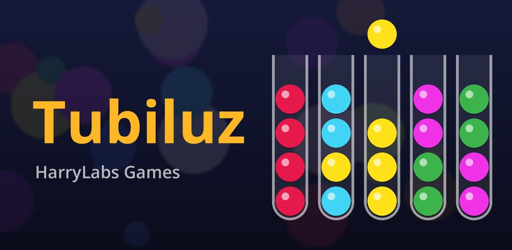

Tubiluz: Ordena los Colores Tubiluz: Color Sort Puzzle Tubiluz: Organize as Cores Tubiluz: Farben sortieren
Ordena bolas de colores en tubos: 200 niveles, modo aleatorio y pistas guiadas. Sort colored balls into tubes. 200 levels, random mode and step-by-step hints. Organize bolas coloridas em tubos: 200 níveis, modo aleatório e dicas guiadas. Sortiere bunte Kugeln in Röhrchen: 200 Level, Zufallsmodus und hilfreiche Tipps.
Quiero ser tester I want to be a tester Quero ser tester Ich will Tester sein
Así se ve How it looks Como fica So sieht’s aus
Desliza o toca una captura para ampliar →
Swipe or tap a screenshot to enlarge →
Deslize ou toque para ampliar →
Wischen oder tippen zum Vergrößern →
Qué es Tubiluz What is Tubiluz O que é Tubiluz Was ist Tubiluz
Es un puzzle tranquilo: toca un tubo para levantar la bola de arriba y luego otro para dejarla. Una bola solo puede ir sobre una del mismo color o en un tubo vacío. Ganas cuando cada tubo está vacío o lleno de un solo color.
- 200 niveles — de 3 a 12 colores, con tubos más altos y retos de un solo tubo vacío.
- Modo aleatorio — tableros sin fin en Fácil, Medio y Difícil, todos con solución.
- Pistas guiadas — iluminan origen y destino con un movimiento de la solución más corta.
- Tutorial — tres movimientos guiados la primera vez; puedes repetirlo cuando quieras.
- Modo daltónico — paleta más fácil de distinguir y un símbolo por color.
- Música y sonidos — relajantes, hechos para el juego; ajustables en Ajustes.
- Idiomas — Español, English, Português y Deutsch.
- Sin cuentas — el progreso se guarda en tu dispositivo.
A calm puzzle: tap a tube to lift its top ball, then another to drop it. A ball can only go onto the same color or into an empty tube. You win when every tube is empty or filled with one color.
- 200 levels — from 3 to 12 colors, taller tubes and one-empty-tube challenges.
- Random mode — endless boards in Easy, Medium and Hard, all solvable.
- Guided hints — highlight from/to with one move of a shortest solution.
- Tutorial — three guided moves the first time; replay anytime.
- Colorblind mode — clearer palette plus a symbol on each color.
- Music & sounds — made for the game; adjustable in Settings.
- Languages — Español, English, Português and Deutsch.
- No account — progress stays on your device.
Um quebra-cabeça tranquilo: toque em um tubo para levantar a bola de cima e depois em outro para soltá-la. Uma bola só vai sobre a mesma cor ou em um tubo vazio. Você vence quando cada tubo está vazio ou cheio de uma só cor.
- 200 níveis — de 3 a 12 cores, tubos mais altos e desafios com um só tubo vazio.
- Modo aleatório — tabuleiros sem fim em Fácil, Médio e Difícil, todos com solução.
- Dicas guiadas — destacam origem e destino com um movimento da solução mais curta.
- Tutorial — três movimentos guiados na primeira vez; pode repetir quando quiser.
- Modo daltônico — paleta mais fácil de distinguir e um símbolo por cor.
- Música e sons — relaxantes, feitos para o jogo; ajustáveis em Ajustes.
- Idiomas — Español, English, Português e Deutsch.
- Sem conta — o progresso fica no seu dispositivo.
Ein entspanntes Puzzle: Tippe auf ein Röhrchen, um die oberste Kugel anzuheben, und dann auf ein anderes. Eine Kugel passt nur auf dieselbe Farbe oder in ein leeres Röhrchen. Du gewinnst, wenn jedes Röhrchen leer ist oder nur eine Farbe hat.
- 200 Level — von 3 bis 12 Farben, höhere Röhrchen und Herausforderungen mit nur einem leeren Röhrchen.
- Zufallsmodus — endlose Felder in Leicht, Mittel und Schwer, alle lösbar.
- Geführte Tipps — markieren Von/Nach mit einem Zug der kürzesten Lösung.
- Tutorial — drei geführte Züge beim ersten Mal; jederzeit wiederholbar.
- Farbenblind-Modus — klarere Palette und ein Symbol pro Farbe.
- Musik & Sounds — eigens fürs Spiel; einstellbar.
- Sprachen — Español, English, Português und Deutsch.
- Kein Konto — der Fortschritt bleibt auf deinem Gerät.
Ayúdame a probarlo Help me test it Ajude-me a testar Hilf mir beim Testen
Estoy buscando personas de confianza para la prueba cerrada de Tubiluz en Android. Es gratis y me ayuda mucho a encontrar fallos antes del lanzamiento.
- Gratis
- Solo Android
- Cuenta de Gmail / Google
- Teléfono Android
Cómo unirte
- Envíale tu correo de Gmail a Harenson (también puedes escribir a harrylabs.games@gmail.com).
- Recibirás un enlace de invitación: ábrelo y acéptalo.
- Instala Tubiluz desde Play Store con esa misma cuenta.
- Quédate en la prueba al menos 14 días seguidos sin salirte.
Jugar un ratito de vez en cuando y contarme si algo falla ayuda muchísimo.
Tubiluz es gratis y muestra anuncios: así se financia el proyecto. Durante la prueba puedes darme tu opinión con total confianza.
I’m looking for trusted people for the closed test of Tubiluz on Android. It’s free and helps a lot to find bugs before launch.
- Free
- Android only
- Gmail / Google account
- Android phone
How to join
- Send your Gmail address to Harenson (or email harrylabs.games@gmail.com).
- You’ll get an invite link — open it and accept.
- Install Tubiluz from the Play Store with that same account.
- Stay in the test for at least 14 consecutive days without leaving.
Playing a little now and then and reporting bugs helps a lot.
Tubiluz is free and shows ads — that’s how the project is funded. During the test you can share feedback freely.
Procuro pessoas de confiança para o teste fechado do Tubiluz no Android. É grátis e me ajuda muito a achar falhas antes do lançamento.
- Grátis
- Só Android
- Conta Gmail / Google
- Celular Android
Como participar
- Envie seu e-mail do Gmail para Harenson (ou escreva para harrylabs.games@gmail.com).
- Você receberá um link de convite: abra e aceite.
- Instale o Tubiluz pela Play Store com essa mesma conta.
- Fique no teste por pelo menos 14 dias seguidos sem sair.
Jogar um pouco de vez em quando e avisar se algo falhar ajuda muito.
Tubiluz é grátis e mostra anúncios: é assim que o projeto se financia. Durante o teste você pode dar feedback com confiança.
Ich suche vertrauenswürdige Leute für den geschlossenen Test von Tubiluz auf Android. Er ist kostenlos und hilft sehr, Fehler vor dem Start zu finden.
- Kostenlos
- Nur Android
- Gmail-/Google-Konto
- Android-Handy
So machst du mit
- Schick deine Gmail-Adresse an Harenson (oder schreib an harrylabs.games@gmail.com).
- Du bekommst einen Einladungslink — öffne ihn und nimm an.
- Installiere Tubiluz über den Play Store mit demselben Konto.
- Bleib mindestens 14 Tage am Stück im Test, ohne ihn zu verlassen.
Ab und zu ein bisschen spielen und Bugs melden hilft enorm.
Tubiluz ist kostenlos und zeigt Werbung — so wird das Projekt finanziert. Im Test kannst du Feedback geben.